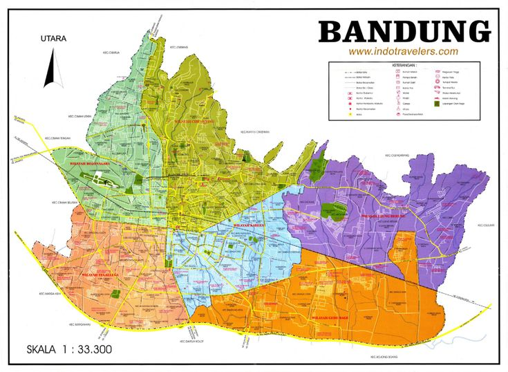

Sejarah

Kata Bandung berasal dari kata bendung atau bendungan karena terbendungnya sungai
Citarum oleh lava Gunung Tangkuban parahu yang lalu membentuk telagenda.Legenda yang
diceritakan oleh orang-orang tua di Bandung mengatakan bahwa nama Bandung diambil dari
sebuah kendaraan air yang ter diri dari dua perahu yang diikat berdampingan yang di sebut
perahu bandung yang digunakan oleh Bupati Bandung, R.A. Wiranatakusumah II,untuk
melayari Ci Tarum dalam mencari tempat kedudukan kabupaten yang baru unkuk menggantikan
ibu kota yang lama di Dayeuhkolot.
Berdasarkan filosofi Sunda, kata Bandung juga berasal dari kalimat Nga-Bandung-an Banda
Indung, yang merupakan kalimat sakral dan luhur karena mengandung nilai ajaran sunda.
Nga-Bandung-an artinya menyaksikan atau bersaksi. Banda adalah segala sesuatu yang
berada di alam hidup yaitu di bumi dan atmosfer, baik makhluk hidup maupun banda mati.
Sinonim dari banda adalah harta.Indung berarti Ibu atu Bumi, disebut juga sebagai Ibu
pertiwi tempat Banda berada.
Geografis

Kota Bandung dikelilingi oleh pegunungan,sehingga bentuk morfologi wilayah bagaikan
sebuah mangkok raksasa.[9] secara geografis kota ini terletak di tengah-tengah provinsi
Jawa Barat, serta berada pada ketinggian 768 m di atas permukaan laut, dengan titik
tertinggi di berada di sebelah utara demgan ketinggian 1.050 mater di atas permukaan
laut dan sebalah selatan merupakan kawasan rendah dengan ketinggian 675 di atas
permukaan laut.
Kota Bandung dialiri dua sungai utama, yaitu sungai Cikapundung dan sungai Citarum
beserta anak-anak sungainya yang pada umumnya mengalir ke arah selatan dan bertemu di
sungai Citarum. Dengan kondisi yang demikian, Bandung selatan sangat rentan terhadap
masalah banjir terutama pada musim hujan.
Wisata
Sejak dibukannya Jalan Tol Cipularang, kota Bandung telah menjadi tujuan utama dalam
menikmati liburan akhir pekan terutama dari masyarakat yang berasal dari Jakarta
sekitarnya. Selain manjadi kota wisata belanja, kota Bandung juga dikenal dengan
sejumlah besar bangunan ala berarsitektur peninggalan Belanda.
Farm Hous Lembaga

Berada di jalur utama Bandung-Lembang, Farm House menjadi objek wisata yang tidak
pernah sepi pengunjung. Selain karena letaknya stategis, kawasan ini juga
menghadirkan nuansa wisata khas Eropa. Semua itu diterapkan dalam bentuk spot swafoto
Instagramable.
Observatorium Bosscha

Memiliki beberapa teleskop, antara lain, Refraktor Ganda Zeiss, Schmidt Bimasakti,
Refraktor Bemberg, Cassegrain GOTO, dan Teleskop Surya. Refraktor Ganda Zeiss adalah
jenis teleskop terbesar untuk meneropong bintang. Benda ini diletakan pada atap kubah
sengga saat teropong digunakan, atap tersebut harus dibuka. Observatorium Bosscha
boleh dikunjungi oleh siapapun, tanpa tiket. Namun, bagi yang ingin menggunakan
teleskop Zeiss, wajib mendaftar diri. Untuk instansi atau lembaga pendidikan,
diberikan jadwal hari selasa sampai jumat. Sementara itu, kunjungan individu dibuka
setiap hari sabtu.